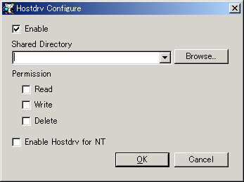

注意: Neko Project 21/Wの不具合やゲストOSの暴走が発生した場合、その影響がホストのファイルにも及ぶことになりますので、共有範囲とアクセス権限は必要最小限にとどめる事をおすすめします。
チェックを入れると共有フォルダ(hostdrv)機能が有効になります。
実際に使用する際はHOSTDRV.COMをMS-DOS上で実行して常駐させたり、デバイスドライバをインストールしたりして下さい。
ゲストOSと共有したいディレクトリを指定します。これが仮想ドライブルートになります。
末尾のディレクトリ区切り文字はあってもなくても構いません。
注意: 相対パスは指定しないで下さい。相対パス指定時の動作は未定義です。
仮想ドライブ内のアクセス権を指定します。 Readは読取可能、Writeは書込可能、Deleteは削除可能です。
安全のためディレクトリを変更すると自動的にWriteとDeleteがオフになります。 必要であれば再度チェックを入れてオンにして下さい。
チェックを入れるとWindows NT3.51, NT4.0, 2000向けの共有フォルダ(hostdrvNT)機能が有効になります。 本オプションを使う場合は、通常のHostdrvもEnableにする必要があります。